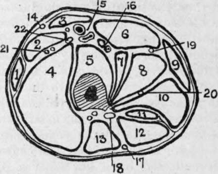

The Thigh. Surface Anatomy
Description
This section is from the book "Surgical Anatomy", by John A. C. MacEwen. Also available from Amazon: Surgical Anatomy.
The Thigh. Surface Anatomy
Running from the apex of Scarpa's triangle to the internal condyle of the femur is a shallow groove, which lodges the sartorius muscle and corresponds to the position of the femoral artery in Hunter's canal.
and marks the separation between the vastus internus on the outside, and the adductor longus and magnus on the inside. The sartorius also forms the inner margin of a triangle, whose apex is at the anterior superior spine and whose outer border is formed by the tensor fasciae femoris, the floor being formed by the rectus. As the knee is approached, the rectus in front and vasti on either side become particularly prominent. The position of the external intermuscular septum, which extends in from the fascia lata to the linea aspera of the femur, separating the flexor and extensor muscles, is marked by a slight vertical groove on the outer posterior aspect of the thigh, which extends from the insertion of the gluteus maximus to the outer side of the knee-joint. The skin over this line is rather adherent to the fascia lata, and in front of it the tissues do not yield readily to pressure, owing to the ilio-tibial band. The course of the long saphenous vein is indicated by a line running from the saphenous opening to the posterior border of the sartorius at the level of the internal condyle ; that of the long saphenous nerve by the line of the artery, the nerve lying at first outside, and then, in Hunter's canal, crossing in front of the femoral sheath to the inside. The course of the great sciatic nerve is indicated by a line from a point midway between the great trochanter and tuber ischii to the middle of the popliteal space.
The skin of the thigh is thin on the inner, but thicker on the outer aspect of the limb, while, with the exception of the portion over the external intermuscular septum, it is loosely attached, becoming easily separated by injury or in amputation, and permitting extensive subcutaneous extravasations. The fascia lata, with the ilio-tibial band and external intermuscular septum, has already been spoken of. In all it sends in three septa, separating the muscles into three distinct groups-anterior, flexor, and adductor. The extensor group is supplied by the anterior crural nerve, the flexor group by the great sciatic nerve, and the adductor group by the obturator nerve. Both external and internal septa extend into the linea aspera. The former, commencing at the insertion of the gluteus maximus beneath the great trochanter, ends at the knee-joint, and separates the extensor from the flexor muscles (vastus externus from short head of biceps), while the latter, less well defined, extends from the small trochanter to the adductor tubercle, and separates the extensors from the adductors (vastus internus from the adductor longus and magnus). A third ill - defined septum separates the adductors from the flexors. At the knee the fascia extends down in front over the quadriceps and patella, and becomes continuous with the deep fascia of the leg, while posteriorly it covers in the popliteal space, and surrounds the muscles forming its lateral boundaries. The fascia lata offers resistance to all swellings lying under it. It has occasionally been ruptured by injury, and the subjacent injured muscle (quadriceps, or adductor longus) has formed a hernia through the rent. The quadriceps tendon has been ruptured by muscular violence.
Hunter's canal lies on the inner side of the thigh, occupying fully the middle third of the line already given as representing the course of the femoral artery, the upper third of which lies in Scarpa's triangle. It consists of a narrow prismatic space, bounded externally by the vastus internus and internally by the adductors longus. and magnus, and roofed in by a strong fibrous expansion running from the vastus to the adductors. It contains the superficial femoral vessels, the vein lying behind and a little to the outside of the artery, and the long saphenous nerve, which lies in front of the vessels, running obliquely from without inwards.
Fig. 38.-Outline Diagram of Transverse Section of Thigh at the Junction of Upper and Middle Thirds.
(Modified from Heath.)
1. | Tensor fasciai femori*. | Sl- | Adduct. gracilis. | 16. | Profunda vessels. |
2. | Rectus. | 10. | Adduct magnus. | 17.18. | Small sciatic nerve. |
3. | Sartorius. | 11. | Semimemb. | Great sciatic nerve. | |
4. | Vastus externos. | 12. | Semitend. | 19. | Superficial obturator nerve |
5. | Vastus int. and crureus. | 13. | Biceps. | 20. | Deep obturator nerve. |
6 | Adduct. long. | 14. | Ext. cutan, nerve. | 21. | Ext. circumflex vessels. |
7. | Pectineus. | 15. | Femoral vessels. | 22. | Ant. crural nerve. |
8. | Adduct. brev. |
In ligature of the artery, in Hunter's canal, the limb is flexed, abducted, and rotated outwards, and an incision made in the middle one-third of the thigh through the skin, subcutaneous tissue, and deep fascia, the long saphenous vein being drawn to one side if exposed ; the sartorius, wThose fibres may be recognized running down and inwards (while those of the vastus internus run down and out), is drawn inwards (opposite of its treatment in Scarpa's triangle), and then the aponeurotic roof of the canal is incised, the long saphenous nerve drawn to the side, and the ligature passed from either side. The collateral circulation is the same as in ligature at the apex of Scarpa.
Continue to:
- prev: Hip-Joint Disease
- Table of Contents
- next: The Femur